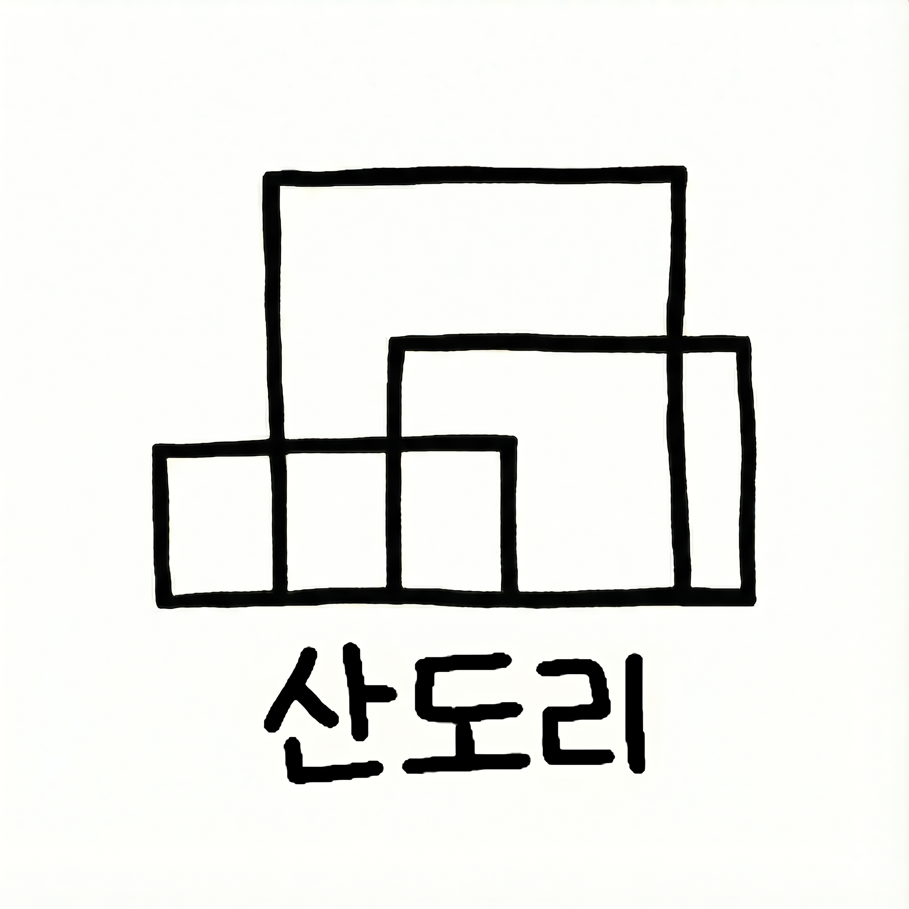
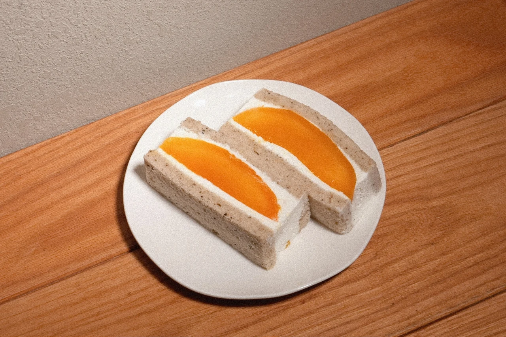
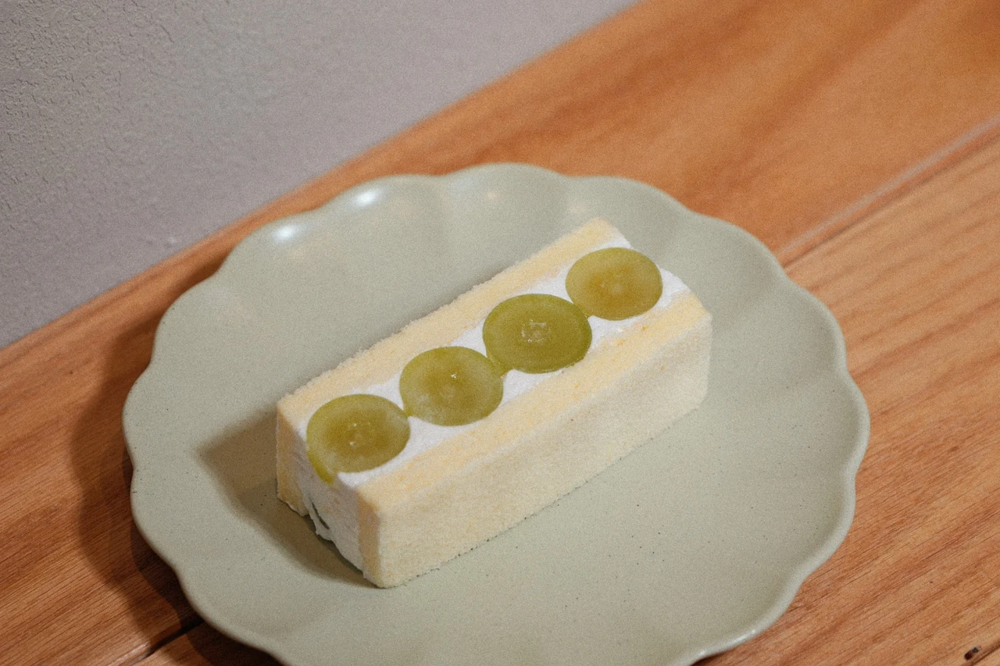
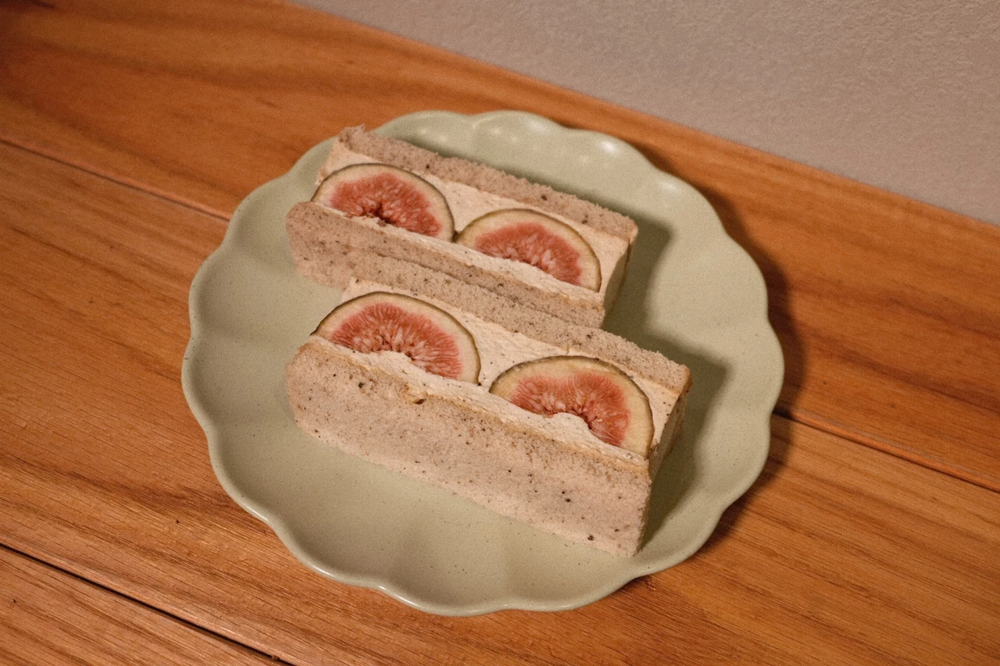

과일이 먼저 보이는 홈페이지
산도리는 테이크아웃 전문점인 만큼 공간보다 제품을 먼저 보여줍니다. 산도의 실제 단면, 과일의 색, 시트와 크림의 질감이 사진만으로도 충분히 전달되도록 구성했습니다.
계절에 따라 달라지는 산도
과일 수급과 계절에 따라 메뉴는 달라질 수 있습니다. 그날 준비한 산도와 모찌는 매장 및 공식 채널에서 확인할 수 있습니다.


부드러운 시트와 크림 사이에 계절의 과일을 담아 만드는 산도리의 과일산도. 실제 산도의 색과 질감이 그대로 보이도록 제품 사진을 중심으로 홈페이지를 구성했습니다.
VIEW SANDO →



첨부해준 실제 제품 사진을 모두 반영했습니다. 화면 크기에 따라 PC에서는 3열, 태블릿에서는 2열, 모바일에서는 1열로 자연스럽게 바뀝니다.
산도리는 테이크아웃 전문점인 만큼 공간보다 제품을 먼저 보여줍니다. 산도의 실제 단면, 과일의 색, 시트와 크림의 질감이 사진만으로도 충분히 전달되도록 구성했습니다.
과일 수급과 계절에 따라 메뉴는 달라질 수 있습니다. 그날 준비한 산도와 모찌는 매장 및 공식 채널에서 확인할 수 있습니다.